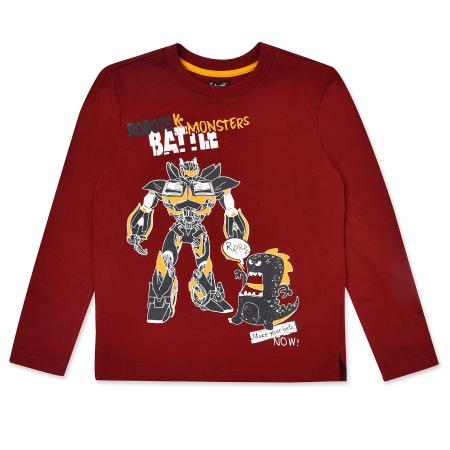

Джемпер Futurino Fashion бордовый

Стоимость: 499 руб.
Описание товара
Детям от 7 лет до 12 лет
Джемпер Futurino Fashion насыщенного оттенка бордо украшен забавным принтом в виде робота.
Характеристики товара
- Код товара: 2036408001sup
- Артикул: Battle-D1
- Бренд: Futurino Fashion
- Страна-производитель: Бангладеш
- Материал: 100% хлопок
- Габариты упаковки: 30 x 5 х 30 см
- Вес упаковки: 0.17 кг.
Подробное описание товара
- Прочный хлопок хорошо пропускает воздух
- Материал не вытягивается на локтях
- Прямой крой
- Круглый окантованный вырез
- Высокая износостойкость
Обращаем Ваше внимание, что правильное определение размера детской одежды напрямую зависит от индивидуальных особенностей ребёнка.